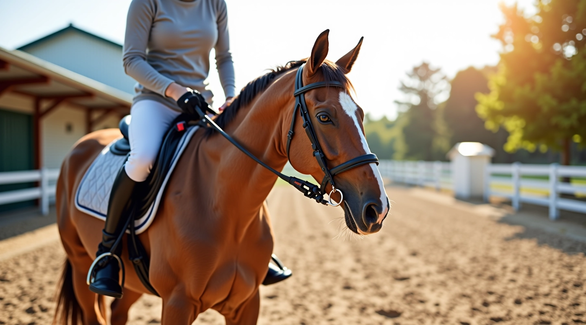
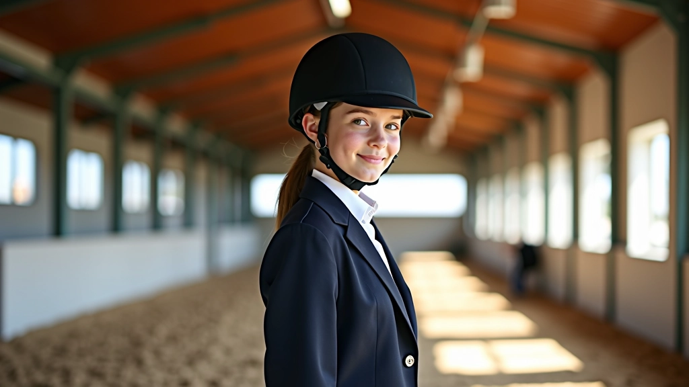

اختيار المعدات الواقية المناسبة
شرح تفصيلي لكيفية اختيار الخوذة والسترة الواقية والحذاء المناسب لممارسة الفروسية بأمان
اقرأ الدليل الكامل
تعلم القواعد الأساسية للركوب الآمن والثقة في التعامل مع الحصان
المعدات الواقية هي أساس السلامة في الفروسية. يجب اختيار الخوذة التي تناسب حجم رأسك بشكل صحيح، والتأكد من أنها معتمدة دولياً. السترة الواقية توفر حماية إضافية للظهر والأضلاع. حذاء الفروسية يجب أن يكون بكعب منخفض لتجنب انزلاق القدم من الركاب.
اقرأ المزيد

الجلوس الصحيح على الحصان هو المفتاح للتحكم والراحة. يجب أن تكون وضعيتك مستقيمة وأكتافك متراجعة قليلاً. الحفاظ على توازن جسدك يساعدك على البقاء آمناً خلال جميع الحركات. التدريب المنتظم على تقنيات التوازن يحسن ثقتك وقدرتك على التعامل مع حالات الطوارئ.
اقرأ المزيدالحصان حيوان حساس يحتاج إلى معاملة لطيفة وثابتة. تعلم كيفية الاقتراب من الحصان بشكل صحيح والتحدث معه بنبرة هادئة. فهم لغة جسد الحصان يساعدك على توقع سلوكه وتجنب المواقف الخطيرة. بناء علاقة ثقة مع حصانك يجعل الركوب أكثر متعة وأماناً.
اقرأ المزيد
السلامة في الفروسية ليست مسألة خيار بل ضرورة. نحن نركز على تعليم الفرسان الناشئين أهم المبادئ التي تحميهم من الإصابات. برنامجنا يغطي كل شيء من اختيار المعدات الصحيحة إلى فهم سلوك الحصان. كل درس مصمم ليكون واضحاً وعملياً حتى تتمكن من تطبيقه فوراً.
في نادي الشرطة للفروسية بالجيزة، نؤمن أن الفروسية يجب أن تكون متعة آمنة للجميع. مدربونا لديهم سنوات من الخبرة في التعامل مع الفرسان من جميع المستويات. نحن نستخدم طرق تدريس حديثة مع احترام تام للتقاليد الفروسية العريقة.
تعرف على منهجنا
كل مهارة مبنية على الأخرى لتطوير فارس آمن وواثق
اختيار وارتداء المعدات الواقية بشكل صحيح يقلل من مخاطر الإصابات.
إتقان الجلسة الصحيحة والتوازن والتحكم بالحصان بفعالية.
فهم احتياجات الحصان وبناء علاقة ثقة وآمنة معه.
التعرف على المواقف الخطيرة واتخاذ الإجراءات الوقائية المناسبة.
معرفة قواعد الحلبة والممارسات الآمنة في كل موقف.
تطوير القوة والتحمل والمرونة اللازمة للركوب الآمن.
نحن نقدم تدريباً عالي الجودة منذ تأسيسنا
سنة التأسيس
بدأنا مهمتنا في توفير تدريب فروسية آمن وعملي للفرسان الناشئين.
أدلة تعليمية
نقدم محتوى شامل يغطي جميع جوانب السلامة الأساسية في الفروسية.
صفحات معلومات
مصادر تفصيلية موثوقة لكل ما تحتاج معرفته عن الفروسية الآمنة.
اكتشف أهم المواضيع لتطوير مهاراتك في الفروسية الآمنة
شرح تفصيلي لكيفية اختيار الخوذة والسترة الواقية والحذاء المناسب لممارسة الفروسية بأمان
اقرأ الدليل الكامل
تعلم الطريقة الصحيحة للجلوس على الحصان والحفاظ على التوازن أثناء الحركة والتعامل مع الحصان بثقة
اقرأ الدليل الكامل
قواعد التعامل الآمن مع الحصان قبل وبعد الركوب وكيفية بناء ثقة متبادلة بينك وبين حصانك
اقرأ الدليل الكاملهل لديك أسئلة حول السلامة في الفروسية؟ هل تريد معرفة المزيد عن برامجنا التدريبية؟ فريقنا هنا للمساعدة والإجابة على جميع استفساراتك.
نستخدم ملفات تعريف الارتباط لتحسين تجربتك على الموقع. بالمتابعة، أنت توافق على سياسة الخصوصية الخاصة بنا.